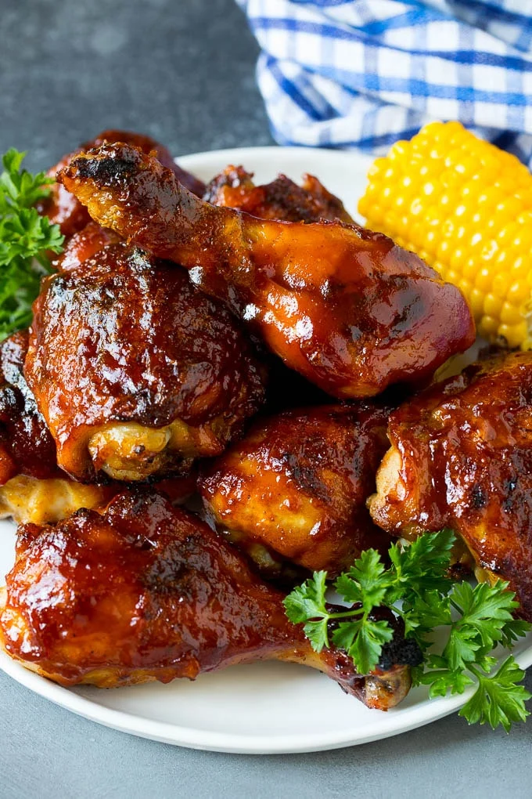

BBQ Chicken

Description
This chicken is great served with baked potatoes and a salad. Perfect for a BBQ party! Garnish with fresh parsley or coriander leaves.
Ingredients
- 2 tablespoons olive oil
- 1 onion, finely chopped
- 3/4 cup ketchup
- 2 tablespoons Worcestershire sauce
- 2 tablespoons white wine vinegar
- 2 tablespoons brown sugar
- 1/2 cup water
- 10 chichen legs
Directions
- Heat oil in a medium saucepan over medium heat. Add the onion and garlic and saute for 5 to 10 minutes, or until onion is tender. Then add the ketchup, Worcestershire sauce, vinegar, brown sugar and water. Mix together well and season with salt and pepper to taste. Reduce heat to low, cover and simmer for 20 minutes. Set aside, covered, and let cool.
- Place chicken in a shallow, nonporous dish and pour sauce over chicken, reserving some sauce in a separate container for basting. Cover chicken and marinate in the refrigerator for at least one hour, or overnight. Cover reserved sauce, if any, and keep in the refrigerator.
- Preheat an outdoor grill for medium high heat and lightly oil grate.
- Grill chicken over medium high heat for 8 to 12 minutes per side, basting occasionally with the sauce, if any, until internal temperature reaches 180 degrees F (80 degrees C).